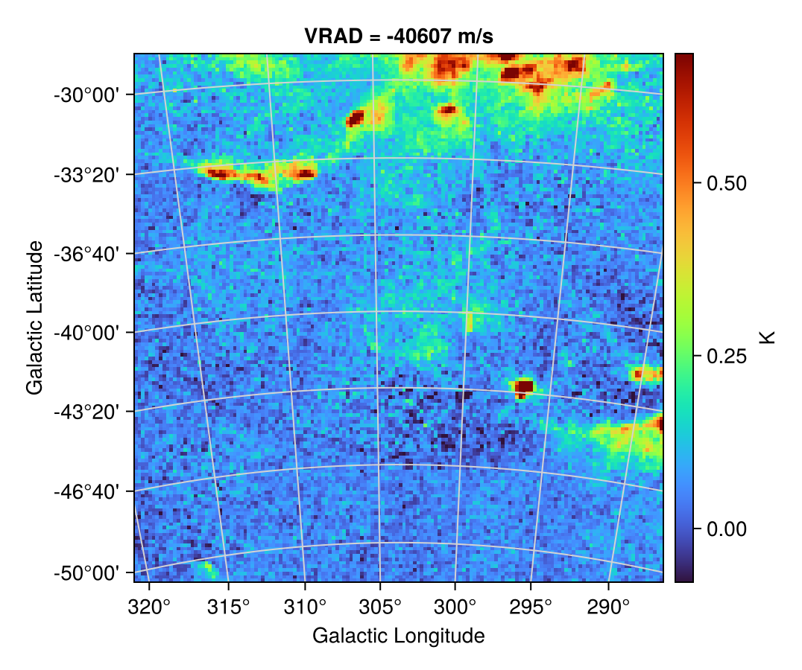
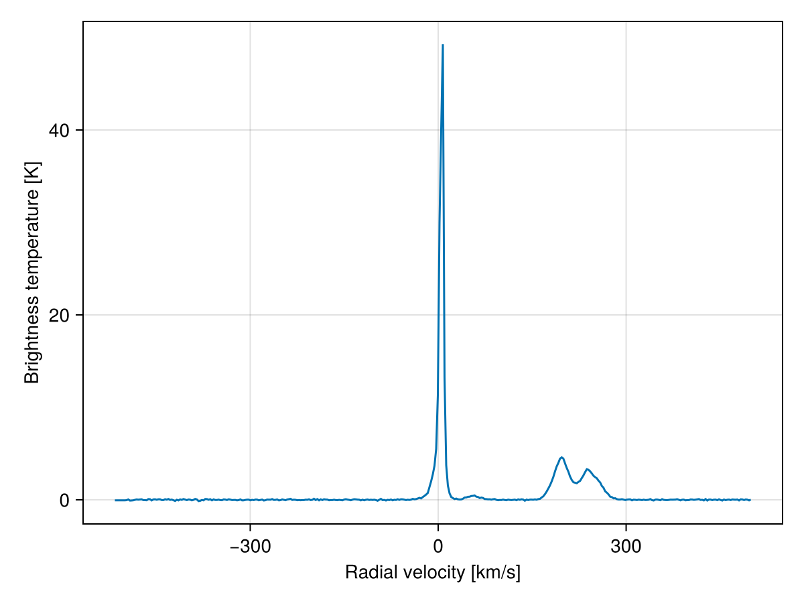
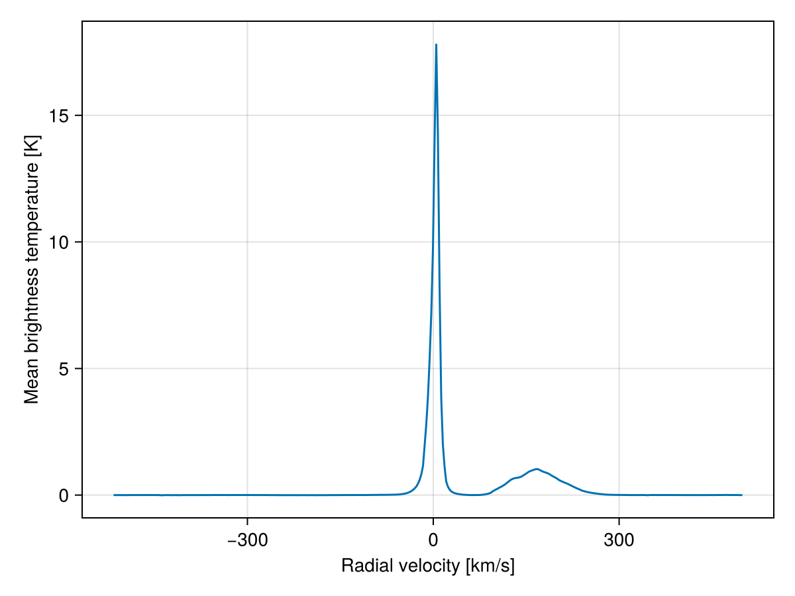
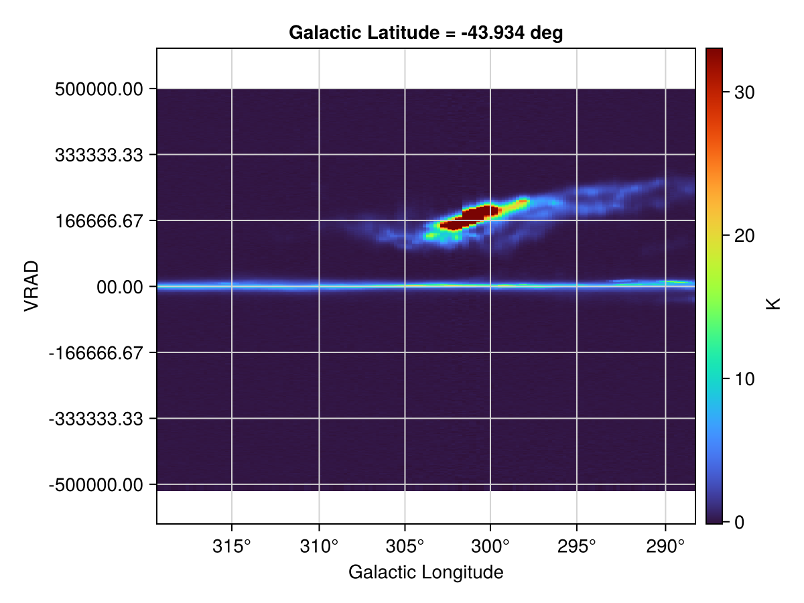
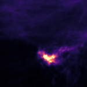
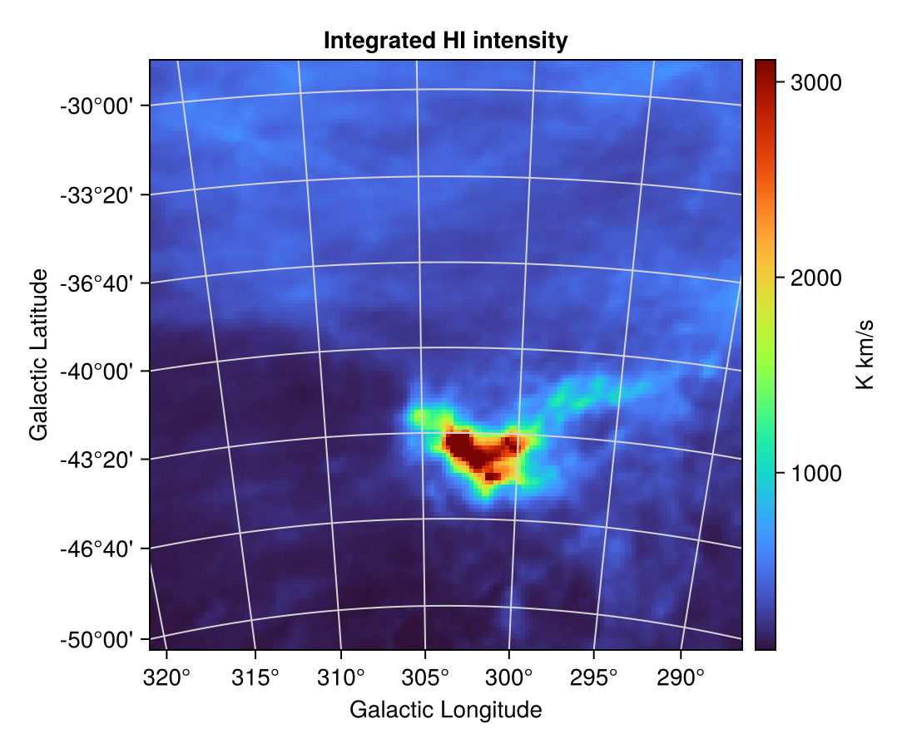
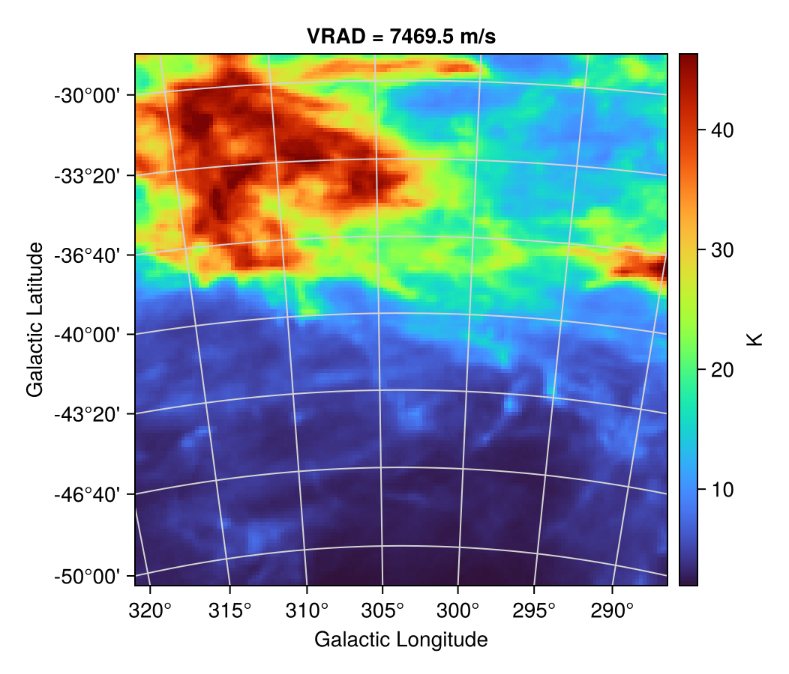

Spectral Axes
Spectral data cubes pair two spatial axes with a third axis in frequency, wavelength, or velocity. AstroImages tracks that axis the same way as any other dimension, and uses the FITS WCS headers to translate between channel numbers and physical spectral coordinates.
Let's work with a radio cube of neutral hydrogen (HI) emission toward the Small Magellanic Cloud, from the astropy FITS-cubes tutorial. It's the same cube used in Dimensions and World Coordinates:
using AstroImages
using CairoMakie
using Downloads: download
fname = download("https://www.astropy.org/astropy-data/tutorials/FITS-cubes/reduced_TAN_C14.fits")
HIcube = load(fname)┌ 150×150×450 AstroImage{Float32, 3} ┐
├────────────────────────────────────┴───────────────────────── dims ┐
↓ X Sampled{Int64} Base.OneTo(150) ForwardOrdered Regular Points,
→ Y Sampled{Int64} Base.OneTo(150) ForwardOrdered Regular Points,
↗ Z Sampled{Int64} Base.OneTo(450) ForwardOrdered Regular Points
└────────────────────────────────────────────────────────────────────┘
[:, :, 1]
↓ → 1 2 3 4 5 6 … 144 145 146 147 148 149 150
1 NaN NaN NaN NaN NaN NaN NaN NaN NaN NaN NaN NaN NaN
2 NaN NaN NaN NaN NaN NaN NaN NaN NaN NaN NaN NaN NaN
3 NaN NaN NaN NaN NaN NaN NaN NaN NaN NaN NaN NaN NaN
⋮ ⋮ ⋱ ⋮ ⋮
147 NaN NaN NaN NaN NaN NaN NaN NaN NaN NaN NaN NaN NaN
148 NaN NaN NaN NaN NaN NaN NaN NaN NaN NaN NaN NaN NaN
149 NaN NaN NaN NaN NaN NaN NaN NaN NaN NaN NaN NaN NaN
150 NaN NaN NaN NaN NaN NaN … NaN NaN NaN NaN NaN NaN NaNThe Spectral Axis
The WCS headers describe what each axis measures:
wcs(HIcube, ' ')FITSWCS.WCSTransform{3, 9, FITSWCS.TAN, FITSWCS.NoDistortionPipeline, FITSWCS.AuxiliaryWCSData{Tuple{Nothing, Nothing}, Tuple{Nothing, Nothing}, FITSWCS.NoTabularWCSData, FITSWCS.SpectralWCSData{Tuple{FITSWCS.SpectralSpec{Val{:F}, Val{:F}, Val{:VRAD}, Val{:LINEAR}}}}, FITSWCS.NoTimeWCSData, FITSWCS.NoGrismWCSData}, Nothing}(3, [75.55762081784387, 77.3723930634757, 225.2033585224447], [303.75, -40.0, 0.0], [-0.1494444443846667 0.0 0.0; 0.0 0.1538888888273333 0.0; 0.0 0.0 2670.899035984071], ["GLON-TAN", "GLAT-TAN", "VRAD "], ["deg ", "deg ", "m/s "], 180.0, -40.0, 303.75, -40.0, FITSWCS.TAN(), FITSWCS.NoDistortionPipeline(), FITSWCS.AuxiliaryWCSData{Tuple{Nothing, Nothing}, Tuple{Nothing, Nothing}, FITSWCS.NoTabularWCSData, FITSWCS.SpectralWCSData{Tuple{FITSWCS.SpectralSpec{Val{:F}, Val{:F}, Val{:VRAD}, Val{:LINEAR}}}}, FITSWCS.NoTimeWCSData, FITSWCS.NoGrismWCSData}((nothing, nothing), (nothing, nothing), FITSWCS.NoTabularWCSData(), FITSWCS.SpectralWCSData{Tuple{FITSWCS.SpectralSpec{Val{:F}, Val{:F}, Val{:VRAD}, Val{:LINEAR}}}}((FITSWCS.SpectralSpec{Val{:F}, Val{:F}, Val{:VRAD}, Val{:LINEAR}}(3, 1.42040576e9, 0.211061140541, 0.0, 0.0, 1.0, "LSRK ", "LSRK ", 0.0, 0.0, "LSRK "),)), FITSWCS.NoTimeWCSData(), FITSWCS.NoGrismWCSData()), 1, 2, nothing, "ICRS", 2000.0, "", false, [1.0, 1.0, 1.0])The third axis has ctype VRAD — radial velocity — measured in m/s. FITSWCS.jl (which AstroImages uses to interpret these headers) supports the full set of spectral coordinate types from the FITS WCS standard: frequency (FREQ), wavelength (WAVE, AWAV), velocity (VRAD, VOPT, VELO), redshift (ZOPT), and the rest of the Paper III family, including non-linearly sampled axes declared through algorithm codes like FREQ-F2W. Whatever the spectral type, the same pixel_to_world and world_to_pixel calls translate between channel numbers and spectral coordinates.
For example, the velocity of the first and last channel:
pixel_to_world(HIcube, [1, 1, 1])[3], pixel_to_world(HIcube, [1, 1, size(HIcube, 3)])[3](-598824.5341419885, 600409.1330148593)The cube spans roughly ±600 km/s.
Channel Maps
Indexing out a single channel gives a 2D image, and the velocity that channel corresponds to automatically appears in the plot title (see Dimensions and World Coordinates for more on slicing cubes):
implotview(HIcube[Z = 228]; cmap = :turbo)
Often you know the velocity you care about, not the channel number. To find the channel closest to a given radial velocity, take the world coordinates of any pixel, set the velocity component, and convert back:
world = pixel_to_world(HIcube, [1, 1, 1])
world[3] = -40_000 # target: -40 km/s
zpix = world_to_pixel(HIcube, world)[3]210.2271278746013implotview(HIcube[Z = round(Int, zpix)]; cmap = :turbo)
Extracting Spectra
Indexing down to a single spatial position gives a 1D spectrum along the cube's spectral axis. Let's take the brightest pixel of the channel we plotted above:
ix, iy = Tuple(argmax(HIcube[Z = 228]))
spectrum = HIcube[X = ix, Y = iy]┌ 450-element AstroImage{Float32, 1} ┐
├────────────────────────────────────┴─────────────── dims ┐
↓ Z Sampled{Int64} 1:450 ForwardOrdered Regular Points
└──────────────────────────────────────────────────────────┘
1 NaN
2 NaN
3 NaN
4 NaN
5 NaN
⋮
446 NaN
447 NaN
448 NaN
449 NaN
450 NaNThe spectrum records the spatial position it was extracted from as reference dimensions. To plot it against velocity rather than channel number, build the velocity axis with pixel_to_world:
vels = [pixel_to_world(HIcube, [ix, iy, z])[3] for z in 1:size(HIcube, 3)] ./ 1e3 # km/s
fig = Figure()
ax = Axis(fig[1, 1]; xlabel = "Radial velocity [km/s]", ylabel = "Brightness temperature [K]")
lines!(ax, vels, collect(spectrum))
fig
The narrow line at 0 km/s is HI in the Milky Way's disk; the broader structure near +200 km/s is gas in the Small Magellanic Cloud. (The BUNIT header tells us the data are in Kelvins.)
Reductions over the spatial axes give spatially averaged spectra. This cube uses NaN for blanked pixels, so we filter them out per channel with eachslice:
using Statistics
avgspectrum = map(eachslice(HIcube; dims = Z)) do channel
mean(filter(!isnan, channel))
end
fig = Figure()
ax = Axis(fig[1, 1]; xlabel = "Radial velocity [km/s]", ylabel = "Mean brightness temperature [K]")
lines!(ax, vels, collect(avgspectrum))
fig
Position–Velocity Slices
Slicing along a spatial axis instead of the spectral one gives a position–velocity diagram. The frozen spatial coordinate moves into the title, and the panel fills its layout cell since a mixed longitude/velocity frame has no meaningful data aspect ratio:
implotview(HIcube[Y = 45]; cmap = :turbo)
Both the Milky Way disk (the horizontal line at 0 km/s) and the Small Magellanic Cloud (near +200 km/s) stand out immediately against position.
Moment Maps
Collapsing the spectral axis produces moment maps. Here is the integrated intensity (moment 0): the sum over channels, scaled by the channel width in km/s. Because of the blanked NaN pixels, we substitute zero before summing:
dv = HIcube["CDELT3"] / 1e3 # channel width in km/s
mom0 = dropdims(sum(x -> isnan(x) ? zero(x) : x, HIcube; dims = Z); dims = Z) .* dv
One caveat: collapsing a dimension leaves behind a reference dimension at its midpoint, so the automatic plot title would claim this map shows a single velocity channel. Override it (and the colorbar unit, since the integration changed the units from K to K km/s) with the axis and colorbar_label keywords:
implotview(mom0; cmap = :turbo, colorbar_label = "K km/s", axis = (; title = "Integrated HI intensity"))
The Spec Dimension
The automatic dimension names are X, Y, and Z, but nothing requires the spectral axis to be called Z. AstroImages exports a Spec dimension name you can assign at load time:
HIcube2 = load(fname, 1, (X, Y, Spec))
dims(HIcube2)(↓ X, → Y, ↗ Spec)Indexing and world coordinate lookups work exactly as before, just under the clearer name:
implotview(HIcube2[Spec = 228]; cmap = :turbo)